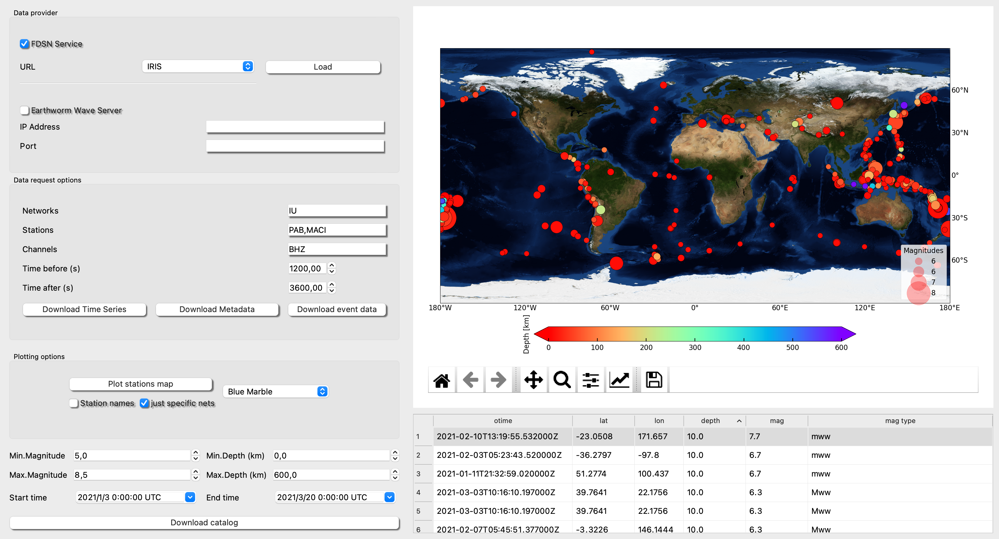

Retrieve Data

Retrieve Data framework is an interface to facilitate download specific events to time-series or select a period and download data from different stations.

Step1:
Select a FDSN web service and click load. This action will load the inventory.
Step2:
You can plot the inventory stations and can be add to the posterior request with double-click on the map or manually added. Also you can remove it with right button double-click.
From this point you can follow different actions, Download Time Series: Just set Starttime and Endtime and click on the button. This will download the mini seeds of the stations/channels requested for that period.
Download Metadata: This action will download the stations.xml of the stations/channels requested.
Step3:
If we want to download earthquake seismograms from a period of time for specific stations/channels.
Step1:
Download catalog (see figure) and select the rows of the earthquake you are interested. Next, fill the gaps for net, stations and channels. You can plot the stations and use double-click action to select the stations.
Step 2:
Fill the cut time-window (s) before and after the first arrival and click on Download event data.
The available FDSN web services are:
- BGR http://eida.bgr.de
- EMSC http://www.seismicportal.eu
- ETH http://eida.ethz.ch
- GEONET http://service.geonet.org.nz
- GFZ http://geofon.gfz-potsdam.de
- ICGC http://ws.icgc.cat
- INGV http://webservices.ingv.it
- IPGP http://ws.ipgp.fr
- IRIS http://service.iris.edu
- ISC http://isc-mirror.iris.washington.edu
- KNMI http://rdsa.knmi.nl
- KOERI http://eida.koeri.boun.edu.tr
- LMU http://erde.geophysik.uni-muenchen.de
- NCEDC http://service.ncedc.org
- NIEP http://eida-sc3.infp.ro
- NOA http://eida.gein.noa.gr
- ODC http://www.orfeus-eu.org
- ORFEUS http://www.orfeus-eu.org
- RASPISHAKE http://fdsnws.raspberryshakedata.com
- RESIF http://ws.resif.fr
- SCEDC http://service.scedc.caltech.edu
- TEXNET http://rtserve.beg.utexas.edu
- USGS http://earthquake.usgs.gov
- USP http://sismo.iag.usp.br
There is also the possibility to connect to your own server to download the inventory and the data.